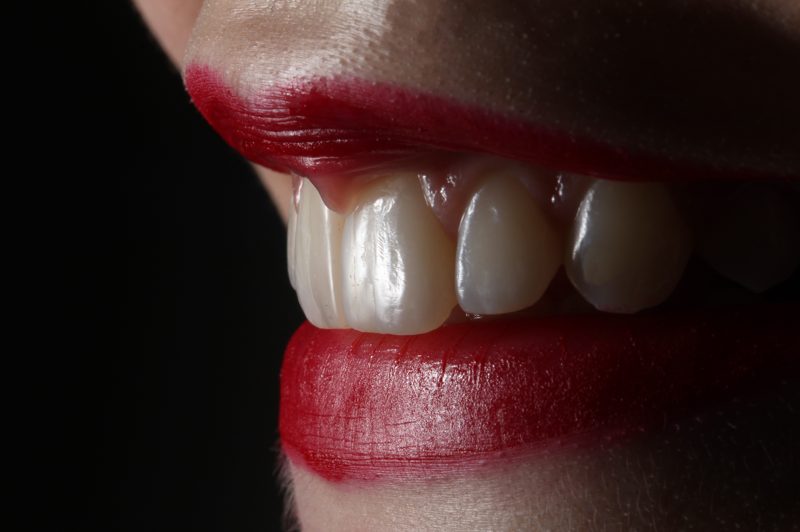

Dental filling

The physiognomic fillings are made with light-curable composite materials and are made in the dental office.
The fillings prevent further degradation of the tooth and strengthen the remaining tooth structure.
The physiognomic fillings are made with light-curable composite materials and are made in the dental office.
The fillings prevent further degradation of the tooth and strengthen the remaining tooth structure.